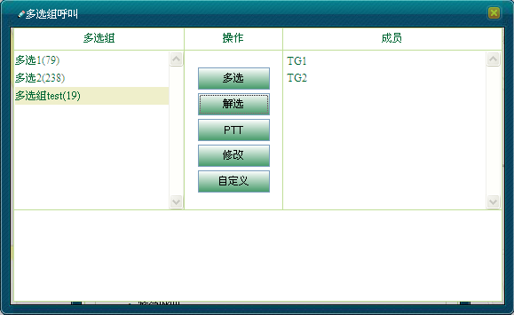

多选组呼叫是对所有组资源进行选择性的组合多选，使其能作为一个多选组呼叫。
多选组呼叫只能由调度台发起。
在本系统中，包括了预定义的多选组（即“编组信息”中的“多选组”）和自定义的多选组。
单击［调度功能/呼叫面板］，在“呼叫业务”模块中选择“多选组呼叫”，弹出“多选”对话框，显示“编组信息”中的“多选组”信息，如下图1所示。调度员可进行多选组相关的修改、多选、呼叫、解多选操作。
图1. 多选对话框
具有权限的调度员可以自定义添加多选组，具体操作步骤如下：
1）在“多选”对话框中单击＜自定义＞，弹出“添加”对话框，如下图2所示。
图2. 添加多选组
2）输入新增多选组信息，单击＜确定＞完成操作。
3）在“多选”对话框中显示新增多选组信息，且赋予一个多选组号。调度员可对新增的多选组发起多选组呼叫。
 说明：
说明：
系统最多允许创建3个多选组。
一个多选组至少需要添加一个成员组。
自定义的多选组在关闭“多选”对话框后消失，不会保存至“编组信息”的“多选组”信息中。
具有权限的调度员可以修改多选组信息，具体操作步骤如下：
1）在对话框中选中要修改的多选组名称。
2）单击＜修改＞，弹出“修改成员”对话框，如下图3所示。
图3. 修改多选组
3）调度员可根据实际需要修改多选组成员信息。
4）单击＜确定＞完成操作。此时，在“多选”成员模块中显示已包含想要多选的成员信息。
1）在对话框中选中要多选的多选组名称。
2）单击＜多选＞按钮，此时，在“成员列表”中会将多选的小组成员多选并显示多选状态。多选成功后，“多选组”模块中显示多选图标，如图4所示。
图4. 多选
多选成功后，调度员可对其发起多选组呼叫，具体操作步骤如下：
1）调度员按住中间区域的＜PTT＞按钮即可发起多选组广播呼叫，此时，所有被多选的小组成员都能接收到调度台语音，在“多选”对话框下方提示多选消息，如图5所示。
图5. 开始多选组呼叫
2）调度员释放＜PTT＞按钮则结束多选组广播呼叫，如图6所示。
图6. 结束多选组广播呼叫
1）在对话框中选中要取消多选的多选组名称。
2）单击＜解选＞按钮即可取消多选，“多选组”模块中多选图标消失，如图7所示。

图7. 解多选
说明：
若当前“多选”对话框中有多选组正在多选，则无法关闭“多选”对话框，需先结束相关多选。
Copyright © 2012 Eastcom, Inc. All rights reserved. |
||